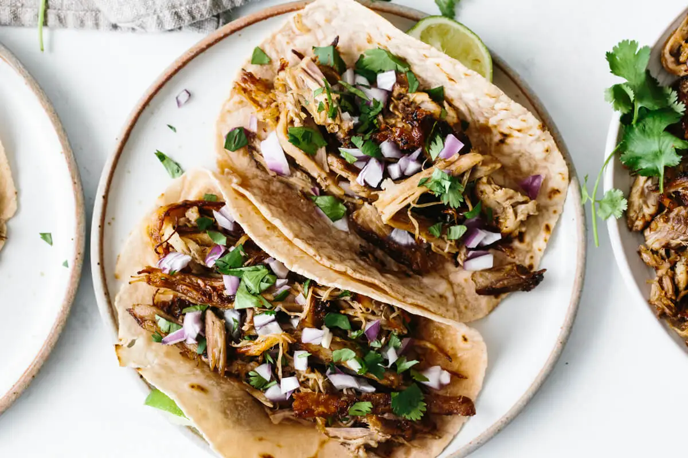

Carnitas

Description
Flavorful, delicious, and sure not to disapoint. Plus, these carnitas are cooked in an instant pot, so they come out much faster than other methods!
Ingredients
- 1 (4-5 lb) boneless pork shoulder, quartered with excess fat trimmed off
- 1 cup (dark) beer
- 6 cloves of garlic, minced
- 1/2 cup fresh orange juice
- 1/4 cup lime juice
- 1 tbsp ground cumin
- 1 tsp dried oregano
- 1 tsp salt
- 1/2 tsp black pepper
- 1 chipotle pepper
- 1 tsp chili powder
- olive oil
- salt and pepper
- 1 white onion, quartered
- For serving: cilantro, red onion, chipotle mayo, cheese
Instructions
- In a mixing bowl, mix beer, garlic, orange juice, lime juice, cumin, oregano, salt, pepper, and chipotle pepper until combined, set aside.
- Season pork chunks on all sides with salt, pepper, and chili powder.
- Turn the instant pot on to "Saute" mode. Add oil and half the pork. Sear on each side for about a minute or until golden brown. Remove and set aside, repeat with other half of pork. Finally, with the instant pot empty, add onion and saute for about 3 minutes, adding oil if needed. Add in sauce prepared earlier and scrape the bottom of the pot to clean it off. Press "Cancel" to turn off the heat.
- Add pork back into the pot, trying to get each piece as submerged in the sauce as possible. Close lid and ensure vent is sealed.
- Cook on high pressure for 90 minutes then release the pressure.
- Open the instant pot, then use two forks to shred the pork. At this point, the chipotle pepper can be removed if found and discarded.
- Add a touch of olive oil to a frying pan and let it preheat some on medium-high.
- Cook pork in batches, adding in some of the remaining liquid whenever the pork dries out.
- Assemble tacos and serve!